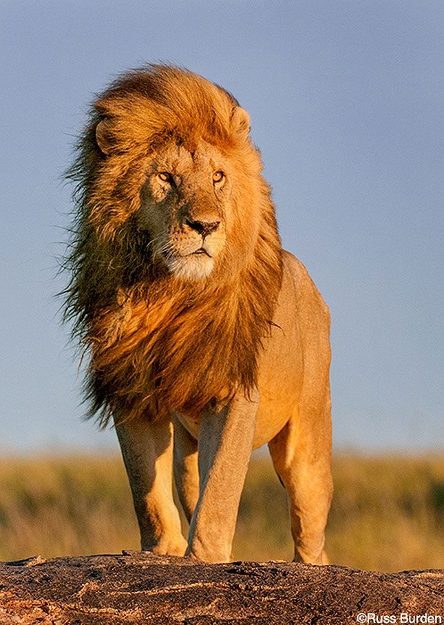
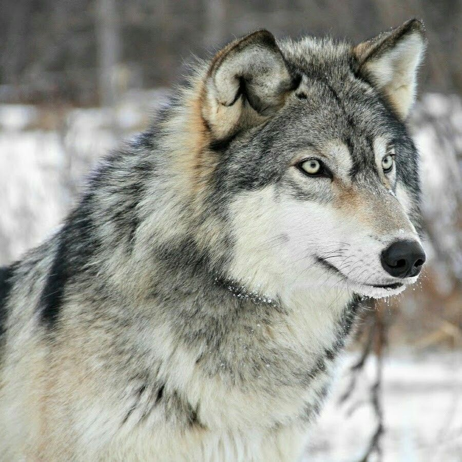

Leão
Panthera leo
| Reino: | Animalia |
| Classe: | Mammalia |
O leão [feminino: leoa] (nome científico:
Panthera leo) é uma espécie de mamífero carnívoro do gênero Panthera e da família Felidae.
A espécie é atualmente encontrada na África subsaariana e na Ásia, com uma única população remanescente em
perigo, no Parque Nacional da Floresta de Gir, Gujarat, Índia. Foi extinto na África do Norte e no Sudoeste
Asiático em tempos históricos, e até o Pleistoceno Superior, há cerca de 10 000 anos, era o mais difundido
grande mamífero terrestre depois dos humanos, sendo encontrado na maior parte da África, em muito da
Eurásia, da Europa Ocidental à Índia, e na América, do Yukon ao México. É uma dos quatro grandes felinos,
com alguns machos excedendo 250 quilogramas em peso, sendo o segundo maior felino recente depois do
tigre.
A pelagem é unicolor de coloração castanha, e os machos apresentam uma juba
característica. Uma das características mais marcantes da espécie é a presença de um tufo de pelos pretos na
cauda, que também possui uma espora. Habita preferencialmente as savanas e pastagens abertas, mas pode ser
encontrado em regiões mais arbustivas. É um animal sociável que vive em grupos que consiste das leoas e suas
crias, o macho dominante e alguns machos jovens que ainda não alcançaram a maturidade sexual. A dieta
consiste principalmente de grandes ungulados e possuem hábitos noturnos e crepusculares, descansando e
dormindo na maior parte do dia. Leões vivem por volta de 10-14 anos na natureza, enquanto em cativeiro eles
podem viver por até 30 anos. Alguns animais desenvolveram o hábito de atacar e devorar humanos, ficando
conhecidos como "devoradores de homens".
A espécie está classificada como "vulnerável" pela União Internacional para a
Conservação da Natureza e dos Recursos Naturais (IUCN), e sofreu um declínio populacional de 30-50% nas
últimas duas décadas no território africano. Na Ásia, o leão está confinado a uma única área protegida e sua
população é estável, mas está classificado como "em perigo", já que a população não passa de 350 animais.
Entre as ameaças, a perda de habitat e os conflitos com humanos são as principais razões de preocupação na
sua conservação. Por centenas de anos, o leão tem sido usado como símbolo de bravura e nobreza em diversas
civilizações e culturas da Europa, Ásia e África. Está amplamente representado em esculturas, pinturas,
bandeiras nacionais, brasões, e em filmes e na literatura contemporâneos.
Lobo
Canis lupus
| Reino: | Animalia |
| Classe: | Mammalia |
O lobo (também chamado de lobo-cinzento; nome
científico: Canis lupus) é uma espécie de mamífero canídeo do gênero
Canis. É um sobrevivente da Era do Gelo, originário do Pleistoceno Superior, cerca de 300 mil anos
atrás. É o maior membro remanescente selvagem da família canidae. O sequenciamento de DNA e estudos
genéticos reafirmam que o lobo-cinzento é ancestral do cão doméstico (Canis lupus familiaris ),
contudo alguns aspectos desta afirmação têm sido questionados recentemente. Uma série de outras subespécies
do lobo-cinzento foram identificadas, embora o número real de subespécies ainda esteja em discussão. Os
lobos-cinzentos são tipicamente predadores ápice nos ecossistemas que ocupam. Embora não sejam tão
adaptáveis à presença humana como geralmente ocorre com as demais espécies de canídeos, os lobos se
desenvolveram em diversos ambientes, como florestas temperadas, desertos, montanhas, tundras, taigas, campos
e até mesmo em algumas áreas urbanas. O lobo-cinzento (Canis lupus), o lobo-vermelho (Canis
rufus), o lobo-etíope (Canis simensis) e o lobo-dourado (Canis anthus) são as
únicas quatro espécies classificadas como lobos. Os demais lobos correspondem a subespécies derivadas dessas
quatro espécies.
O peso e tamanho dos lobos variam muito em todo o mundo, tendendo a aumentar
proporcionalmente com a latitude, como previsto pela teoria de Christian Bergmann. Em geral, a altura,
medida a partir dos ombros, varia de 60 a 95 centímetros. O peso varia geograficamente. Em média, os lobos
europeus pesam 38,5 kg; os lobos da América do Norte, 36 kg; os lobos indianos e árabes, 25 kg. Embora
raros, lobos com mais de 77 kg foram encontrados no Alasca, Canadá e na antiga União Soviética. O
maior lobo-cinzento registrado na América do Norte foi morto em 70 Mile River, no leste-centro do
Alasca em 12 de julho de 1939 e pesava 79 kg. Já o lobo de maior peso registrado na Europa foi morto após a
Segunda Guerra Mundial na área Kobelyakski da região Poltavskij na RSS Ucraniana e pesava 86 kg. O
lobo é sexualmente dismórfico, as fêmeas de uma população típica de lobos normalmente pesam 20% menos que os
machos. As fêmeas também têm o focinho e a fronte mais estreitos, pernas ligeiramente mais curtas e
revestidas com pelos lisos, e ombros menos massivos. Os lobos-cinzentos medem de 1,30 a 2 metros do
focinho à ponta da cauda, a qual, por sua vez, representa cerca de 1/4 do comprimento total do corpo.